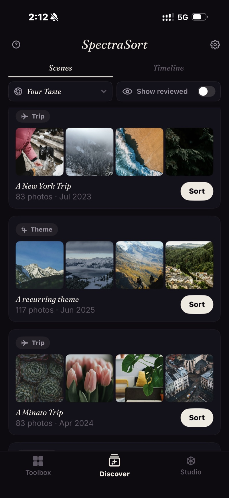
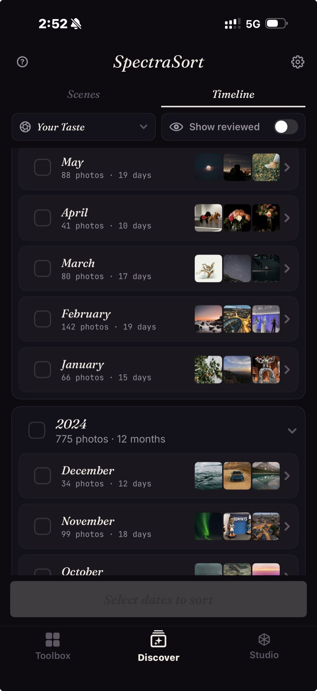

Your library, already gathered.
A camera roll of thousands is hard to face all at once. Discover breaks it into pieces you can actually work through — two panels, one toggle: moments gathered into Scenes, and everything laid out on a Timeline. Sort any slice with a tap.
The life you've photographed, gathered up.
SpectraSort reads the dates and places already on your photos and gathers them into scenes on its own — a weekend trip, a recurring theme, a run of shots in a series. No albums to make, no tagging.
Scroll a feed of these moments and sort any one on its own: tap Sort on a card to pull the best of that trip or that theme straight to the top.


Years, down to months, down to days.
When you know roughly when, the Timeline is the fastest way in. Years open into months, months into days — each row with its count and a strip of thumbnails. Pick a month, a day, or a range, and sort just that.
As you work, photos you've already sorted drop out of view — the Timeline quietly empties, so what's left is always what's still to do. (A Show reviewed toggle brings them back.)
Sort a moment the same way you'd sort everything.
Whatever you open — a scene, a month, a single day — it runs through the same engine as the Toolbox. Choose the profile to sort with (Balanced, or your own Taste), and the best of that slice rises to the top, ready to review. All of it on-device.
Face the whole library, one piece at a time.
Free to try. iPhone, iOS 18.5 or later.
Download on the App Store